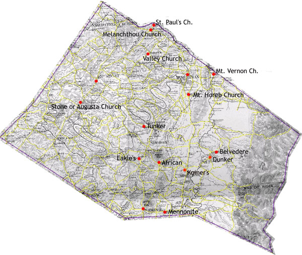

Augusta County: Middle Electoral District Churches
Denominational Affiliations
Presbyterian: Stone or Augusta Church, Mt. Horeb
Lutheran: Koiner's [Koiner's on map]
German Baptist: Tunker, Mt. Vernon Church, Valley Church

This map is derived from a Jedediah Hotchkiss map of
Augusta County, published in 1870 and based on surveys completed
"during the war." The Hotchkiss map has been georeferenced at the
Virginia Center for Digital History, using ESRI Arc Info to produce
a Geographic Information Systems map and database of
households.